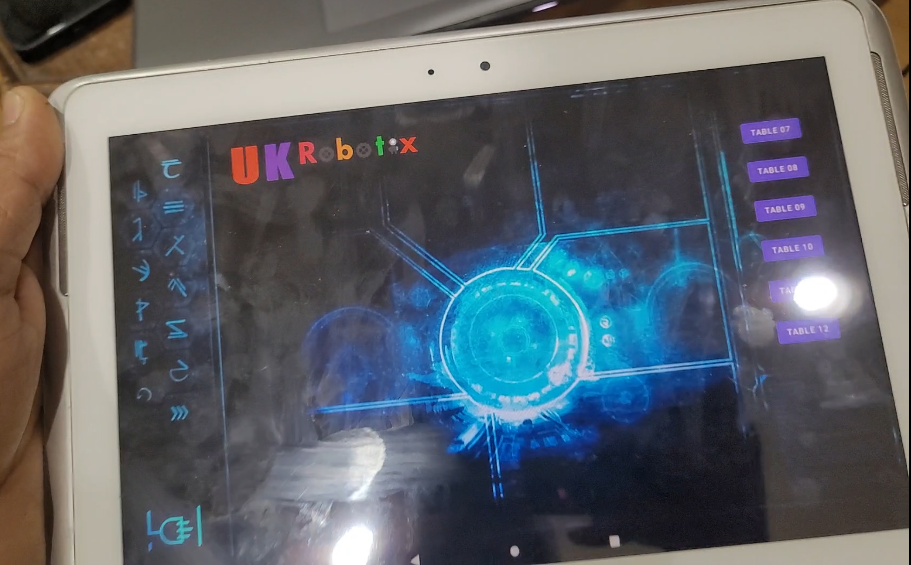
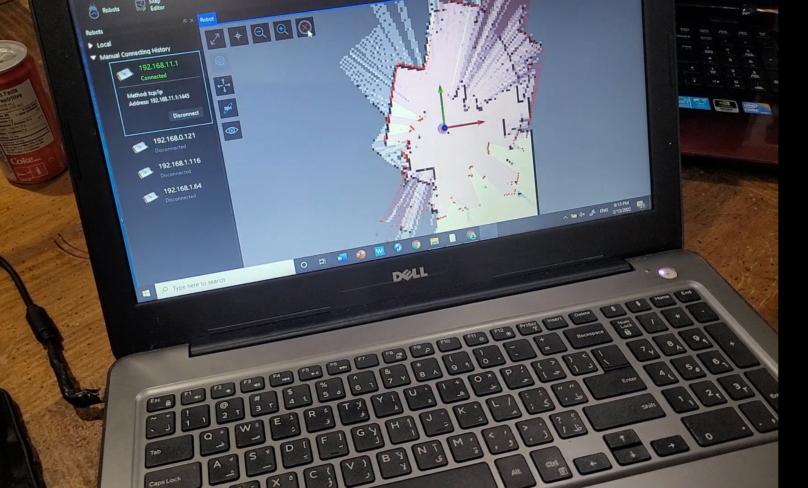
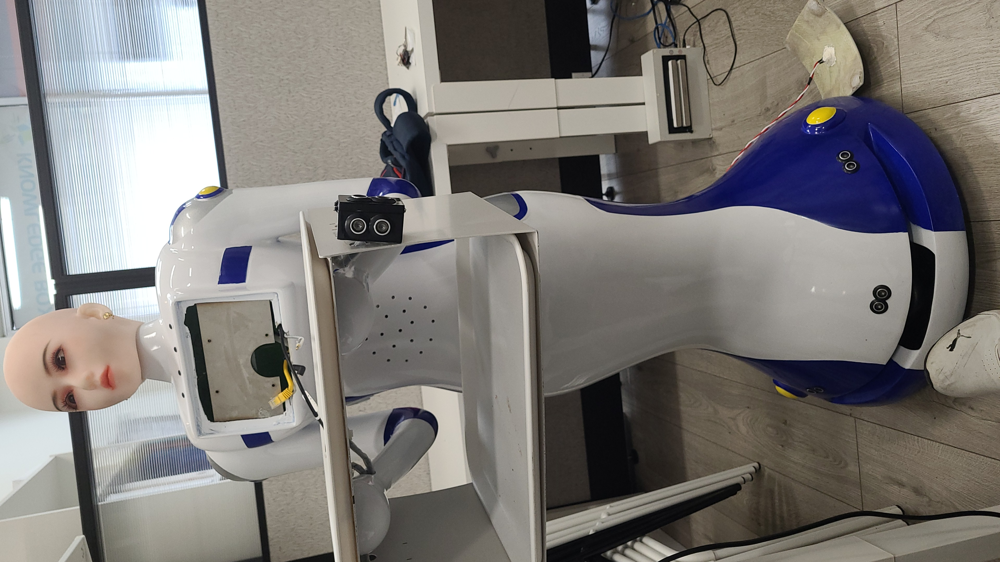
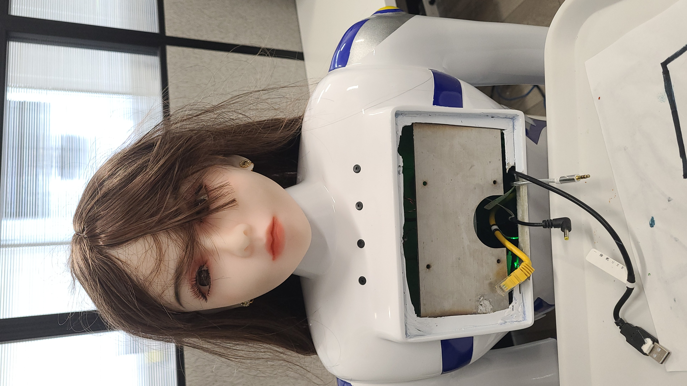

Interface
User actionSelect the destination table in the Android application.
Command handoffThe application communicated the selected destination to the robot over the network using the SLAMTEC integration path.
Robotics · LiDAR · Android Integration
Android destination selection integrated with a SLAMTEC navigation stack so a user could choose a table and send the robot to that location autonomously.
Developed the Android-side interface and communication integration used to send selected table destinations into the robot navigation workflow.
The operator selected a table on the Android interface and the mobile platform used its existing mapping/localization/navigation stack to travel autonomously.
Data flow
Integration problem
The technical value was not just autonomous navigation. The goal was to bridge the navigation hardware/software with a practical table-selection interface a user could operate directly.
Project media
Interface & Navigation


Build-Stage Integration
Early assembly photos document the robot before cosmetic finishing and front-tablet installation, with networking, USB, power and audio cabling accessible for integration and testing.


Development & Validation Videos
Three muted project videos document the development progression. Click any player to start playback.